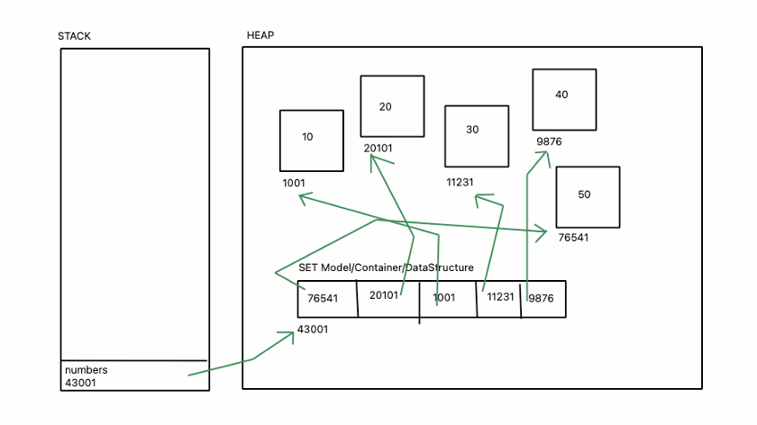
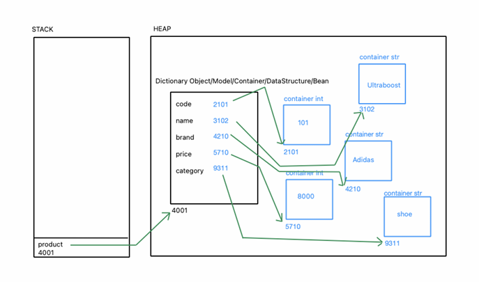
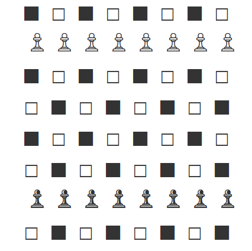

Date: 29 June 2026
Duration: 2:00 Hrs
Training Company: Auribises Technologies
Trainer: Ishant Kumar
Today's session focused on understanding how Sets and Dictionaries are stored in memory, writing reusable Python functions, importing modules, and implementing different types of loops. The session also included a practical activity on generating a chessboard pattern using nested loops.
__name__ Variablemain() FunctionThe trainer explained how Sets are represented internally in memory. Unlike Lists, Sets store only unique values and rely on hashing for efficient lookup and storage.

We observed how duplicate values are removed when converting a List into a Set and how the Set object maintains references to unique elements stored in memory.
We explored how Python Dictionaries store key-value pairs in memory. Each key references its corresponding value, allowing fast retrieval through hashing.

The trainer demonstrated how modifying dictionary values updates the corresponding entries while preserving the overall Dictionary object.
__name__ Variable
The session introduced user-defined functions and the purpose of the
special __name__ variable.
def main():
print("Hello World")
if __name__ == "__main__":
main()
We learned that code inside the if __name__ == "__main__"
block executes only when the file is run directly, making programs
modular and reusable.
We practiced importing one Python file into another and calling functions defined in external modules.
import session4D session4D.hello()
This demonstrated how Python projects can be organized into multiple reusable modules.
Various iteration techniques were implemented using for, while, and nested for loops.
main() function and the
__name__ variable.During the practical session, we implemented a chessboard pattern using nested loops and Unicode characters. The activity helped us understand how nested iteration can generate two-dimensional structures.

The chessboard was generated by combining nested loops with conditional statements to alternate black and white squares while placing pawns on their respective rows.
I completed the assignment by implementing a full chessboard with all standard chess pieces positioned correctly using Unicode chess symbols. The solution was developed using nested loops and conditional statements.
The completed source code has been uploaded to my Python Training Repository.
__name__ variable.Today's session helped me understand how larger Python programs are organized using functions and modules. The practical exercises on loops and module importing strengthened my programming skills, while the chessboard activity demonstrated how logical thinking and nested iteration can be applied to solve real programming challenges.
According to the training roadmap, the next session will introduce operators, conditional constructs, and searching, sorting, and filtering techniques in Python.